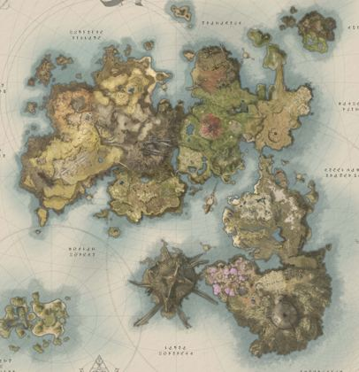
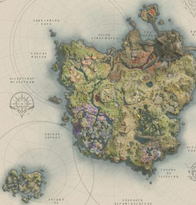
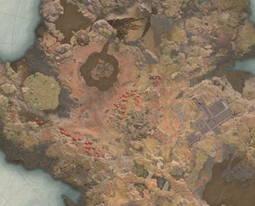
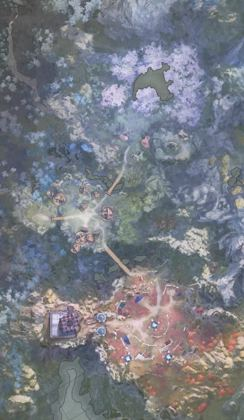
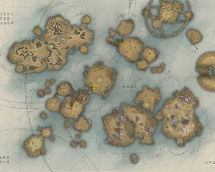

Guia Aion 2
Guias de classe, mapas de farm, tarefas diárias e semanais e ferramentas. Tudo em um lugar só, em português.
5mapas
154cubos escondidos
745monstros
157pets
Hoje
Ferramentas
Novo
✅Tarefas
Checklist diário e semanal com reset e contadores.
🗺️Mapa interativo
5 mapas com cubos, ervas, minérios, teleportes, chefes e pets.
Novo🧭Rotas de farm
Misture cubo, erva e minério e deixe o site sugerir a rota.
🧮Calculadoras
Melhoria de equipamento, relógios e contas rápidas.
📘Guia geral
Subir skills, poções e Alquimia, cubos escondidos.
💡Dicas
Onde mais gente trava e o que pouca gente sabe.
Mapas

AltgardAbrir no mapa
VerteronAbrir no mapa
PoetaAbrir no mapa
IshalgenAbrir no mapa
Lower ReshantaAbrir no mapaGuias das classes
Dados: allthings.how, aion2pets.app, wikily.gg e AION2 Hub. Arte e ícones © NCSOFT. Site de fã, não oficial.